plot_frq(pen$island)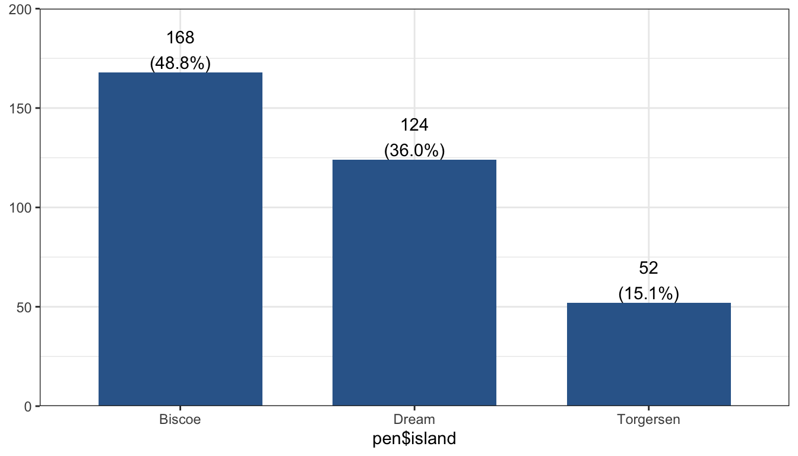
This chapter uses the following packages: ggplot2, sjPlot, gtsummary, waffle, ggpubr, gridExtra.
Visualizing your data is hands down the most important thing you can learn to do. There are links to additional resources at the end of this document for additional learning.
The level of detail you put into your graphs/tables will depend on who the graph/table is for. In general, you will be visualizing data for three audience types: yourself and/or your data management team, an internal audience (other specialties within your organization, research coordinators), and external, professional audiences. The tabs below describe the three audience types and show an example graph for each.
Who is your audience?
Graphs/tables for yourself and/or your working team can be “quick and dirty.” These graphs are for getting a quick look at the data and are meant for people who are already familiar with the data.
plot_frq(pen$island)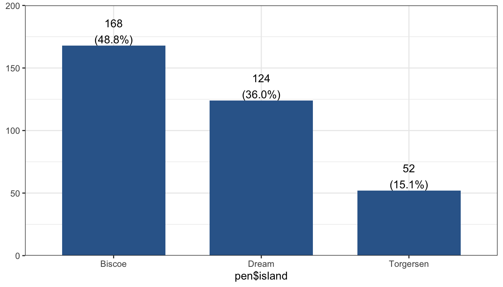
When presenting for an audience with some familiarity with the project and the data analysis process, your graphs don’t have to be completely perfect, but they should be fairly polished and be understandable. A good rule of thumb for these graphs is if they were to end up being published as-is without your knowledge, you wouldn’t be completely embarrassed to see them in print.
plot_frq(pen$island, title = "Count of Penguins by Island") +
xlab("Island") +
theme_minimal()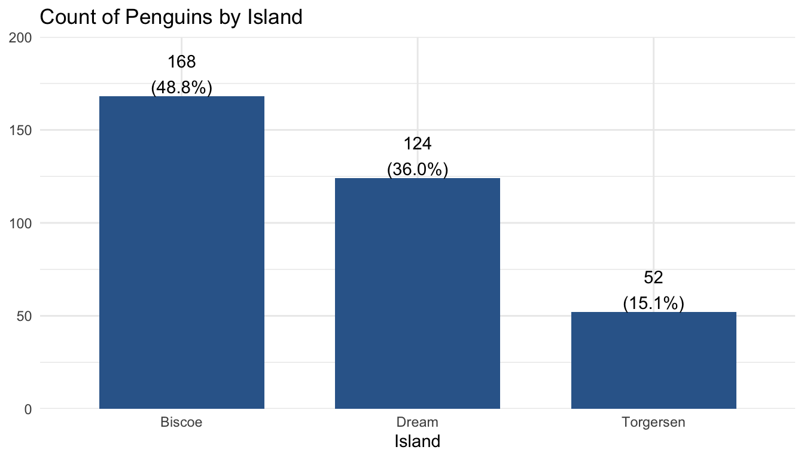
Professional quality graphs and tables have the highest amount of detail and take the most amount of time to make. They should be able to be interpreted by people not familiar with the project or data analysis, even without reading the rest of the report.
plot_frq(pen$island, title = "Count of Penguins by Island") +
labs(subtitle = "Includes penguins of Adelie, Gentoo, and Chinstrap species") +
xlab("Island") +
ylab("Penguin Count") +
theme_minimal()
switch to introduce the penguins dataset MAYBE use ### third level headers.
We will use the penguins dataset that comes with the palmerpenguins package. This dataset contains size measurements for three penguin species observed on three islands in the Palmer Archipelago, Antarctica. Review ?penguins to learn about the variables we will be using.
pen <- palmerpenguins::penguinsFor more practice with ggplot syntax, reference Math 130 Lesson 07, or the R Graphics Cookbook appendix.
[RAD] write a paragraph here about how this section is organized.
Both Nominal and Ordinal data types can be visualized using the same methods: tables, barcharts and pie charts.
Frequency and proporation (relative frequency) tables are the most common way to get summary statistics of a categorical variable.
The table() function produces a frequency table, where each entry represents the number of records in the data set holding the corresponding labeled value.
table(pen$species)
Adelie Chinstrap Gentoo
152 68 124 There are 152 Adelie penguins, 68 Chinstrap penguins, and 124 Gentoo penguins in this dataset.
Robin add text here.
brief explanation of how it works. Defaults to creating a summary table of the entire data set, so you have to pre-select out only the variables you want to get a summary of.
pen |> select(species) |> tbl_summary()| Characteristic | N = 3441 |
|---|---|
| species | |
| Adelie | 152 (44%) |
| Chinstrap | 68 (20%) |
| Gentoo | 124 (36%) |
| 1 n (%) | |
pen |> select(species, island) |> tbl_summary()| Characteristic | N = 3441 |
|---|---|
| species | |
| Adelie | 152 (44%) |
| Chinstrap | 68 (20%) |
| Gentoo | 124 (36%) |
| island | |
| Biscoe | 168 (49%) |
| Dream | 124 (36%) |
| Torgersen | 52 (15%) |
| 1 n (%) | |
This can be advantageous if you want to have a single table showing the frequency distribution of multiple variables.
A Barchart or barplot takes these frequencies, and draws bars along the X-axis where the height of the bars is determined by the frequencies seen in the table.
To create a barplot/barchart in base graphics requires the data to be in summarized in a table form first. Then the result of the table is plotted. The first argument is the table to be plotted, the main argument controls the title.
ps <- table(pen$species)
barplot(ps, main="Barchart using base graphics")
The geometry needed to draw a barchart in ggplot is geom_bar().
ggplot(pen, aes(x=species)) + geom_bar()
The biggest addition to a barchart is the numbers on top of the bars. This isn’t mandatory, but it does make it nice.
ggplot(pen, aes(x=species)) + theme_bw() +
geom_bar(aes(y = ..count..)) + ggtitle("Frequency of penguins by species") +
geom_text(aes(y=..count.. + 10, label=..count..), stat='count', size = 5)Often you don’t want to compare counts but percents. To accomplish this, we have to aggregate the data to calculate the proportions first, then plot the aggregated data using geom_col to create the columns.
spec.props <- data.frame(prop.table(table(pen$species)))
spec.props # what does this data look like? Var1 Freq
1 Adelie 0.4418605
2 Chinstrap 0.1976744
3 Gentoo 0.3604651ggplot(spec.props, aes(x=Var1, y=Freq)) + geom_col() +
ylab("Proportion") + xlab("Species") +
ggtitle("Proportion of penguins by species")
RAD add some intro text here.
Another way to visualize categorical data that takes up less ink than bars is a Cleveland dot plot. Here again we are plotting summary data instead of the raw data. This uses the geom_segment that draws the lines from x=0 to the value of the proportion (named Freq because of the way data.frame works).
ggplot(spec.props, aes(x=Freq, y=Var1)) +
geom_point(size = 3) + xlab("Proportion of penguins") +
theme_bw() + ylab("Species") +
geom_segment(aes(x=0, xend=Freq, y=Var1, yend=Var1), color='grey50')
Just like barplot(), pie() takes a table object as it’s argument.
base
ps <- table(pen$species)
pie(ps)
Pie charts are my least favorite plotting type. Human eyeballs can’t distinguish between angles as well as we can with heights. A mandatory piece needed to make the wedges readable is to add the percentages of each wedge.
pie(ps, labels = paste0(names(ps), ' (', prop.table(ps)*100, "%)"))
ggplot
And here I thought pie charts couldn’t get worse… I’m not a fan at all of the ggplot version. So i’m not even going to show it. Here’s a link to another great tutorial that does show you how to make one.
However – Never say never. Here’s an example of a good use of pie charts.
This type of chart is not natively found in the ggplot2 package, but it’s own waffle package. These are great for infographics.
Reference: Making waffle charts in R - R bloggers
library(waffle)
waffle(ps/10, rows=5, size=0.5,
title="Species of penguins",
xlab="1 square == 10 penguins")
Here we can look at the bill length and depth, flipper length, and body mass of the penguins.
RAD change this to an introduction/motivating example instead of describing a plot type.
plot(pen$bill_length_mm)The base function plot() creates a dotplot for a continuous variable. The value of the variable is plotted on the y axis, and the index, or row number, is plotted on the x axis. This gives you a nice, quick way to see the values of the data.
Often you are not interested in the individual values of each data point, but the distribution of the data. In other words, where is the majority of the data? Does it look symmetric around some central point? Around what values do the bulk of the data lie?
Rather than showing the value of each observation, we prefer to think of the value as belonging to a . The height of the bars in a histogram display the frequency of values that fall into those of those bins. For example if we cut the bill length distribution into 7 bins of equal width, the frequency table would look like this:
table(cut(pen$bill_length_mm, 7))
(32.1,36] (36,40] (40,43.9] (43.9,47.8] (47.8,51.7] (51.7,55.7]
26 74 67 81 75 15
(55.7,59.6]
4 In a histogram, the binned counts are plotted as bars into a histogram. Note that the x-axis is continuous, so the bars touch. This is unlike the barchart that has a categorical x-axis, and vertical bars that are separated.
You can make a histogram in base graphics super easy.
hist(pen$bill_length_mm)
And it doesn’t take too much to clean it up. Here you can specify the number of bins by specifying how many breaks should be made in the data (the number of breaks controls the number of bins, and bin width) and use col for the fill color.
hist(pen$bill_length_mm, xlab="Bill length in mm", main="Histogram of penguin bill lengths", col="cyan", breaks=20)
ggplot(pen, aes(x=bill_length_mm)) + geom_histogram(binwidth = 2.2)
The binwidth here is set by looking at the cut points above that were used to create 7 bins. Notice that darkgrey is the default fill color, but makes it hard to differentiate between the bars. So we’ll make the outline black using colour, and fill the bars with white.
ggplot(pen, aes(x=bill_length_mm)) + geom_histogram(colour="black", fill="white") +
ggtitle("Distribution of penguin bill lengths")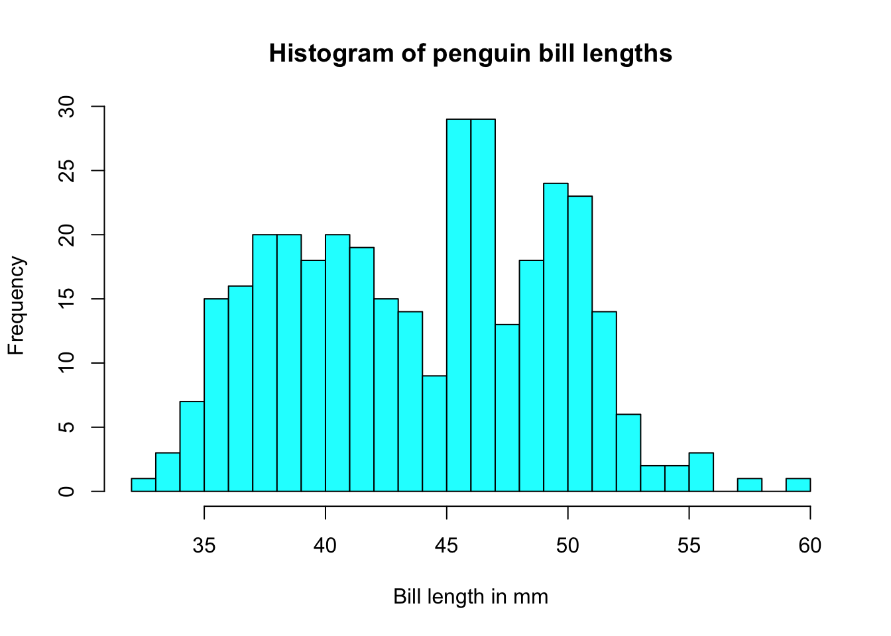
Note I did not specify the binwidth argument here. The size of the bins can hide features from your graph, the default value for ggplot2 is range/30 and usually is a good choice.
RAD add example here.
To get a better idea of the true shape of the distribution we can “smooth” out the bins and create what’s called a density plot or curve. Notice that the shape of this distribution curve is much more… “wigglier” than the histogram may have implied.
plot(density(na.omit(pen$bill_length_mm))) Awesome title huh? (NOT)
added na.omit as base function would not produce plot with missing values
ggplot(pen, aes(x=bill_length_mm)) + geom_density()
Often is is more helpful to have the density (or kernel density) plot on top of a histogram plot.
Since the height of the bars in a histogram default to showing the frequency of records in the data set within that bin, we need to 1) scale the height so that it’s a relative frequency, and then use the lines() function to add a density() line on top.
hist(pen$bill_length_mm, prob=TRUE)
lines(density(na.omit(pen$bill_length_mm)), col="blue")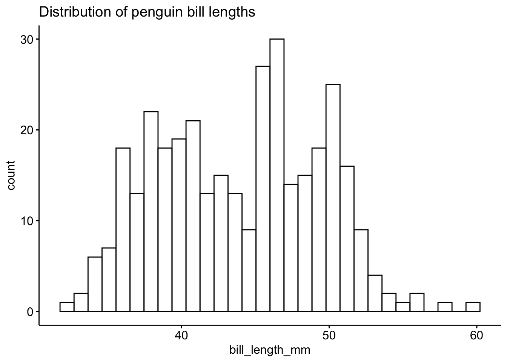
The syntax starts the same, we’ll add a new geom, geom_density and color the line blue. Then we add the histogram geom using geom_histogram but must specify that the y axis should be on the density, not frequency, scale. Note that this has to go inside the aesthetic statement aes(). I’m also going to get rid of the fill by using NA so it doesn’t plot over the density line.
ggplot(pen, aes(x=bill_length_mm)) + geom_density(col="blue") +
geom_histogram(aes(y=..density..), colour="black", fill=NA)Another very common way to visualize the distribution of a continuous variable is using a boxplot. Boxplots are useful for quickly identifying where the bulk of your data lie. R specifically draws a “modified” boxplot where values that are considered outliers are plotted as dots.
boxplot(pen$bill_length_mm)
Notice that the only axis labeled is the y=axis. Like a dotplot the x axis, or “width”, of the boxplot is meaningless here. We can make the axis more readable by flipping the plot on it’s side.
boxplot(pen$bill_length_mm, horizontal = TRUE, main="Distribution of penguin bill lengths", xlab="Bill length in mm")
Horizontal is a bit easier to read in my opinion.
What about ggplot? ggplot doesn’t really like to do univariate boxplots. We can get around that by specifying that we want the box placed at a specific x value.
ggplot(pen, aes(x=1, y=bill_length_mm)) + geom_boxplot()To flip it horizontal you may think to simply swap x and y? Good thinking. Of course it wouldn’t be that easy. So let’s just flip the whole darned plot on it’s coordinate axis.
ggplot(pen, aes(x=1, y=bill_length_mm)) + geom_boxplot() + coord_flip()
ggplot(pen, aes(x=1, y=bill_length_mm)) + geom_violin()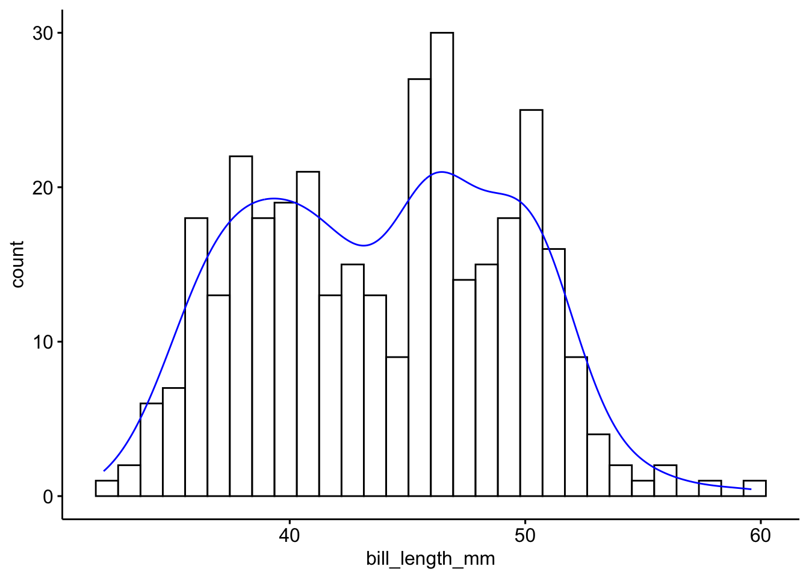
Overlaying a boxplot and a violin plot serves a similar purpose to Histograms + Density plots.
ggplot(pen, aes(x=1, y=bill_length_mm)) + geom_violin() + geom_boxplot()Better appearance - different levels of transparency of the box and violin.
ggplot(pen, aes(x=1, y=bill_length_mm)) + xlab("") + theme_bw() +
geom_violin(fill="blue", alpha=.1) +
geom_boxplot(fill="blue", alpha=.5, width=.2) +
theme(axis.title.x=element_blank(),
axis.text.x=element_blank(),
axis.ticks.x=element_blank())The last useful plot that we will do on a single continuous variable is to assess the normality of the distribution. Basically how close the data follows a normal distribution.
qqnorm(pen$body_mass_g)
qqline(pen$body_mass_g, col="red")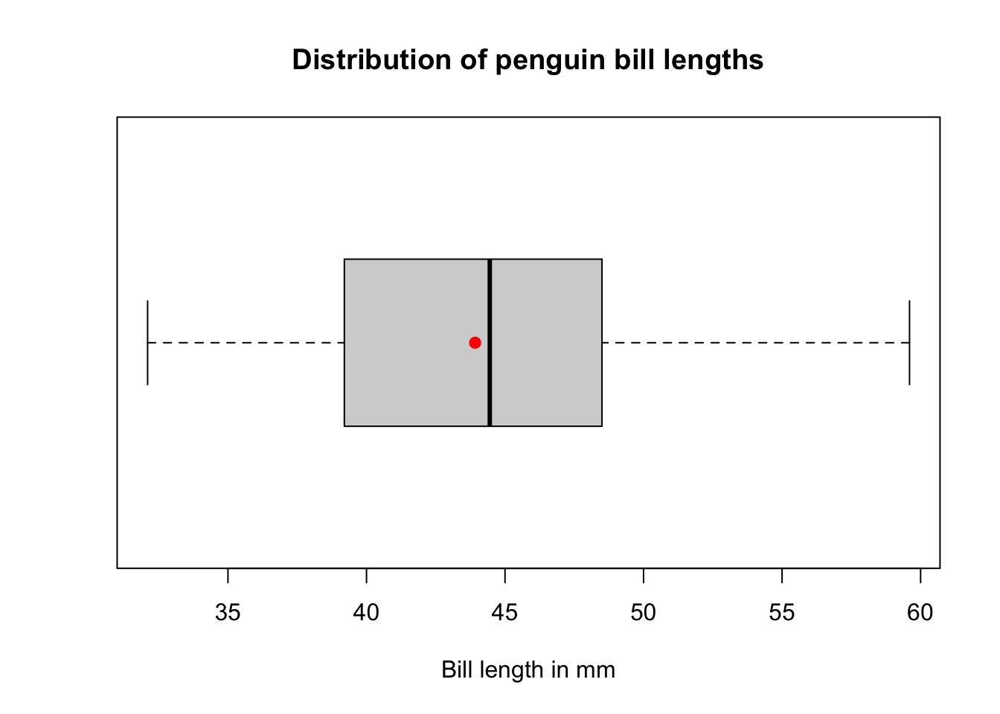
The line I make red because it is a reference line. The closer the points are to following this line, the more “normal” the shape of the distribution is. Price has some pretty strong deviation away from that line. Below I have plotted what a normal distribution looks like as an example of a “perfect” fit.
z <- rnorm(1000)
qqnorm(z)
qqline(z, col="blue")qq (or qnorm) plots specifically plot the data against a theoretical distribution. That means in the aes() aesthetic argument we don’t specify either x or y, but instead the sample= is the variable we want to plot.
ggplot(pen, aes(sample=body_mass_g)) + stat_qq()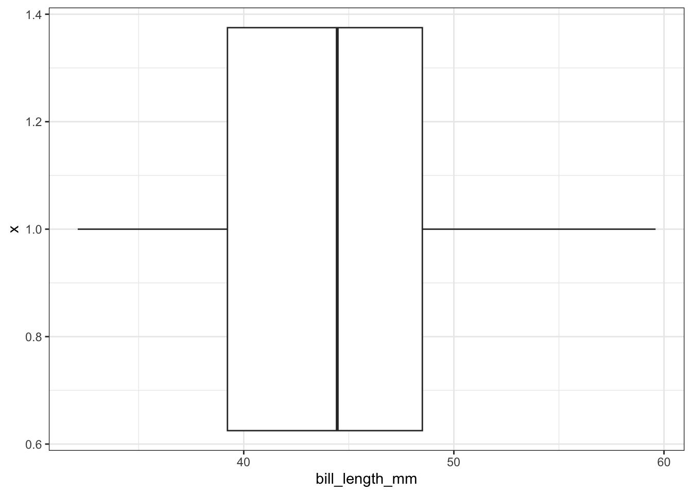
Additional references on making qqplots in ggplot: ggplot2 qq plot (quantile - quantile graph) : Quick start guide - STHDA
intro to two way frequency and proportion tables
Cross-tabs, cross-tabulations and two-way tables (all the same thing, different names) can be created by using the table() function.
The frequency table is constructed using the table() function.
table(pen$island, pen$species)
Adelie Chinstrap Gentoo
Biscoe 44 0 124
Dream 56 68 0
Torgersen 52 0 0There are 44 Adelie penguins and 124 Gentoo penguins on Biscoe Island, 56 Adelie and 68 Chinstrap penguins on Dream Island, and 52 Adelie penguins on Torgersen Island.
Choose your percentages depending on your research question. What are you wanting to compare?
Best practices:
Here are demonstrations of how the interpretation of the percents change depending on what the denominator is.
Cell proportions
Wrapping prop.table() around a table gives you the cell proportions.
prop.table(table(pen$island, pen$species))
Adelie Chinstrap Gentoo
Biscoe 0.1279070 0.0000000 0.3604651
Dream 0.1627907 0.1976744 0.0000000
Torgersen 0.1511628 0.0000000 0.000000012.8% of all penguins are Adelie penguins living on Biscoe Island, and 36% are Gentoo penguins living on Biscoe Island, so about 39% of all penguins in our data are living on Biscoe Island.
Row proportions
To get the row proportions, you specify margin=1. The percentages now add up to 1 across the rows.
round(prop.table(table(pen$island, pen$species), margin=1),3)
Adelie Chinstrap Gentoo
Biscoe 0.262 0.000 0.738
Dream 0.452 0.548 0.000
Torgersen 1.000 0.000 0.00026.2% of penguins on Biscoe Island are from the Adelie species. The remaining 73.8% on the island are Gentoo penguins.
Column proportions
To get the column proportions, you specify margin=2. The percentages now add up to 1 down the columns.
round(prop.table(table(pen$island, pen$species), margin=2),3)
Adelie Chinstrap Gentoo
Biscoe 0.289 0.000 1.000
Dream 0.368 1.000 0.000
Torgersen 0.342 0.000 0.0000.289% of all Adelie penguins are on Biscoe Island. Chinstrap and Gentoo species are endemic to a single island, so 100% of their populations are on Dream and Torgersen Island, respectively.
To compare proportions of one categorical variable within the same level of another, is to use grouped barcharts.
As before, the object to be plotted needs to be the result of a table.
is <- table(pen$island, pen$species)
barplot(is)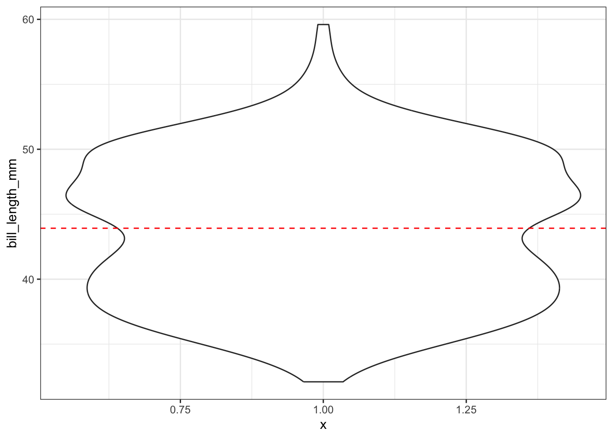
Stacked bars can be difficult to interpret, and very difficult to compare values between groups. A side by side barchart is preferable. The beside=TRUE is what controls the placement of the bars.
barplot(is, main="quick side by side barchart using base graphics", beside=TRUE)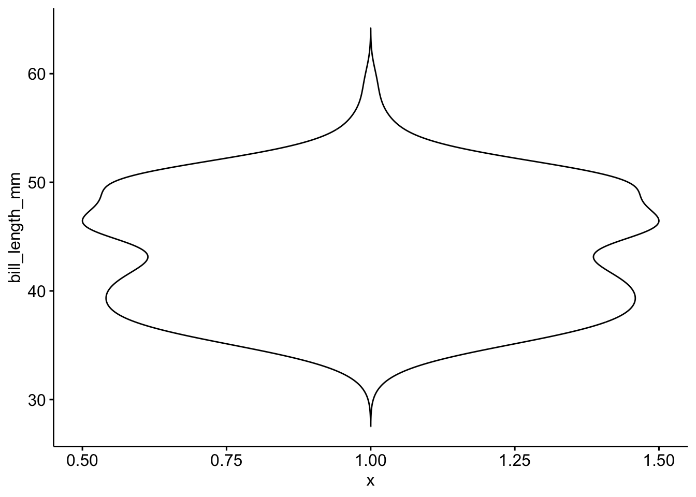
Again plot the cut on the x axis, but then fill using the second categorical variable. This has the effect of visualizing the row percents from the table above, or the percent of species on each island.
ggplot(pen, aes(x=island, fill=species)) + geom_bar()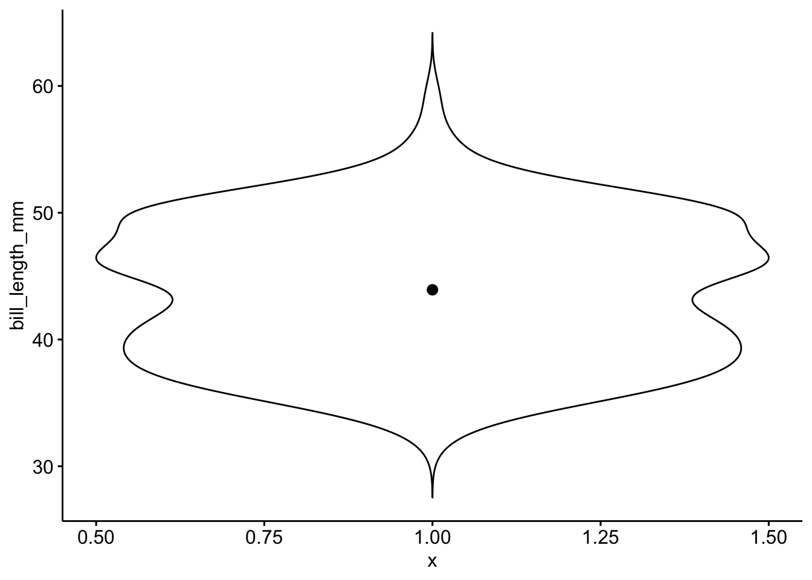
Again the default is a stacked barchart. So we just specify position=dodge to put the bars side by side.
ggplot(pen, aes(x=island, fill=species)) + geom_bar(position = "dodge")
And look, an automatic legend. What if I wanted to better compare island population proportions within species? This is the column percentages. Just switch which variable is the x axis and which one is used to fill the colors!
ggplot(pen, aes(x=species, fill=island)) + geom_bar(position = "dodge")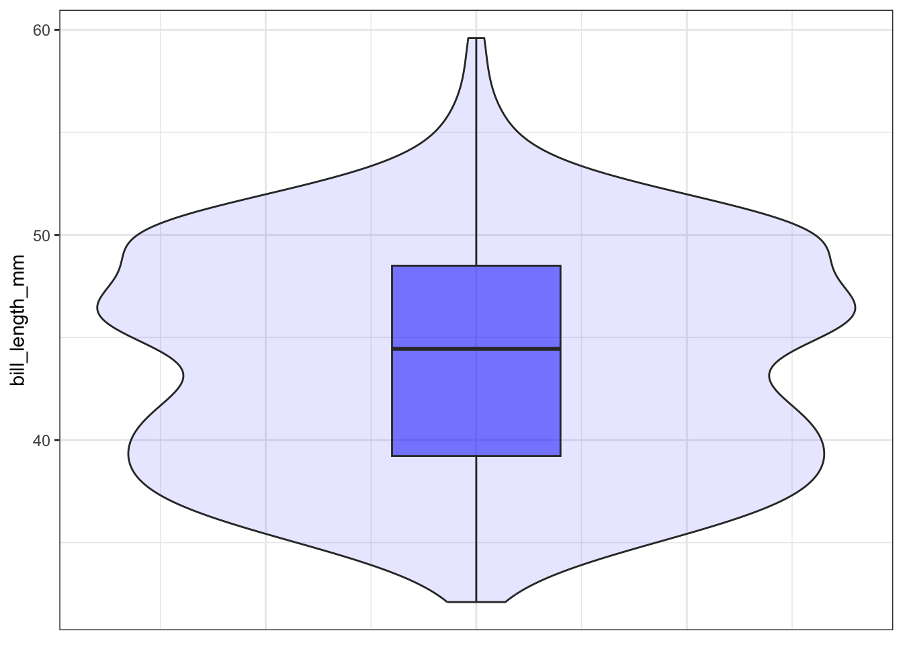
For more than 2 colors I do not recommend choosing the colors yourself. I know little about color theory so I use the built-in color palettes. Here is a great cheatsheet about using color palettes.
And this easy change is why we love ggplot2.
Not as easy as one would hope, but the solution is to calculate the desired percentages first and then plot the summary data using either geom_bar(stat='identity') or geom_col().
library(dplyr)
calc.props <- pen %>% group_by(island, species) %>%
summarise(count=n()) %>%
mutate(pct=round(count/sum(count),3))
calc.props# A tibble: 5 × 4
# Groups: island [3]
island species count pct
<fct> <fct> <int> <dbl>
1 Biscoe Adelie 44 0.262
2 Biscoe Gentoo 124 0.738
3 Dream Adelie 56 0.452
4 Dream Chinstrap 68 0.548
5 Torgersen Adelie 52 1 Since we’re plotting summary data, the height of the bars is specified using y=pct.
ggplot(calc.props, aes(x=island, fill=species, y=pct)) +
geom_col(position="dodge") + theme_bw() 
Now set some options to the y axis using scale_y_continuous() to make the graph more accurate and readable. The labels=percent comes from the scales package.
library(scales)
ggplot(calc.props, aes(x=island, fill=species, y=pct)) +
geom_col(position="dodge") + theme_bw() +
scale_y_continuous(limits=c(0,1), labels=percent)
sjPlot does a very nice job of being able to cleanly show not only n’s but percents.
library(sjPlot)
plot_xtab(pen$island, pen$species, margin="row", coord.flip = TRUE) 
But what if you want to know how two categorical variables are related and you don’t want to look at two different barplots? Mosaic plots are a way to visualize the proportions in a table. So here’s the two-way table we’ll be plotting.
table(pen$island, pen$species)
Adelie Chinstrap Gentoo
Biscoe 44 0 124
Dream 56 68 0
Torgersen 52 0 0The syntax for a mosaic plot uses model notation, which is basically y ~ x where the ~ is read as “twiddle” or “tilde”. It’s to the left of your 1 key.
mosaicplot(island~species, data=pen)Increase fig length or use dif example variable
Helpful, ish. Here are two very useful options. In reverse obviousness, color applies shades of gray to one of the factor levels, and shade applies a color gradient scale to the cells in order of what is less than expected (red) to what is more than expected (blue) if these two factors were completely independent.
par(mfrow=c(1,2)) # display the plots in 1 row and 2 columns
mosaicplot(island~species, data=pen, color=TRUE)
mosaicplot(island~species, data=pen, shade=TRUE)For example, there are fewer ‘Very Good’ cut diamonds that are color ‘G’, and fewer ‘Premium’ cut diamonds that are color ‘H’. As you can see, knowing what your data means when trying to interpret what the plots are telling you is essential.
That’s about all the ways you can plot categorical variables. If you are wondering why there was no 3D barcharts demonstrated see
here, here, and here for other ways you can really screw up your visualization.
The most common method of visualizing the relationship between two continuous variables is by using a scatterplot.
Back to the plot() command. Here we use model notation again, so it’s \(y~x\).
plot(flipper_length_mm~body_mass_g, data=pen)
Looks like for the most part as penguin body mass increases so does flipper length. That makes sense.
With ggplot we specify both the x and y variables, and add a point.
ggplot(pen, aes(x=body_mass_g, y=flipper_length_mm)) + geom_point()Other Resources
Two most common trend lines added to a scatterplots are the “best fit” straight line and the “lowess” smoother line.
The best fit line (in blue) gets added by using the abline() function wrapped around the linear model function lm(). Note it uses the same model notation syntax and the data= statement as the plot() function does. The lowess line is added using the lines() function, but the lowess() function itself doesn’t allow for the data= statement so we have to use $ sign notation.
plot(flipper_length_mm~body_mass_g, data=pen)
abline(lm(flipper_length_mm~body_mass_g, data=pen), col="blue")
lines(lowess(na.omit(pen$flipper_length_mm)~na.omit(pen$body_mass_g)),
col="red")
With ggplot, we just add a geom_smooth() layer.
ggplot(pen, aes(x=body_mass_g, y=flipper_length_mm)) + geom_point() + geom_smooth() 
Here the point-wise confidence interval for this lowess line is shown in grey. If you want to turn the confidence interval off, use se=FALSE. Also notice that the smoothing geom uses a different function or window than the lowess function used in base graphics.
Here it is again using the ggplot plotting function and adding another geom_smooth() layer for the lm (linear model) line in blue, and the lowess line (by not specifying a method) in red.
ggplot(pen, aes(x=body_mass_g, y=flipper_length_mm)) + geom_point() +
geom_smooth(se=FALSE, method="lm", color="blue") +
geom_smooth(se=FALSE, color="red")
Line plots connect each dot with a straight line. This is most often done when measuring trends of the response as the value of x increases (such as a time series)
We saw earlier that body_mass_g and flipper_length_mm seemed possibly linear. Let see how the average flipper length changes with body mass.
library(dplyr)
mm.per.g <- pen %>% group_by(body_mass_g) %>% summarise(mean = mean(flipper_length_mm))For base graphics, type=‘b’ means both points and lines, ‘l’ gives you just lines and ‘p’ gives you only points. You can find more plotting character options under ?pch.
plot(mean~body_mass_g, data=mm.per.g, type='l')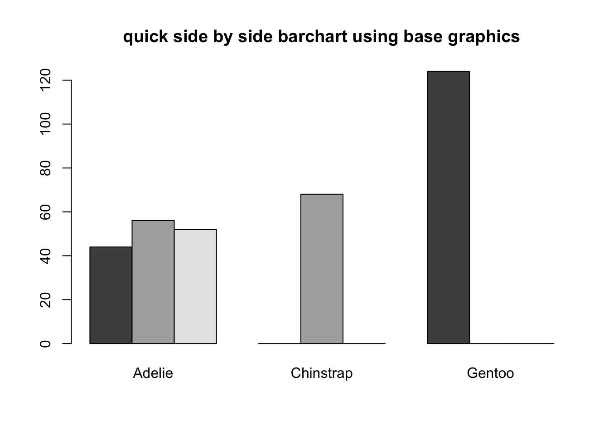
With ggplot we specify that we want a line geometry only.
ggplot(mm.per.g, aes(x=body_mass_g, y=mean)) + geom_line()
How does this relationship change with penguin species? First lets get the average flipper length per combination of body mass and species
mmpgs <- pen %>% group_by(body_mass_g, species) %>% summarise(mean = mean(flipper_length_mm))This is where ggplot starts to excel in it’s ease of creating more complex plots. All we have to do is specify that we want the lines colored by the cut variable.
ggplot(mmpgs, aes(x=body_mass_g, y=mean, col=species)) + geom_line()
And we get one line per cut.
This plot can be created in base graphics, but it takes an advanced knowledge of the graphics system to do so. So I do not show it here.
Create an appropriate plot for a continuous variable, and plot it for each level of the categorical variable.
Dotplots can be very useful when plotting dots against several categories. They can also be called stripcharts.
stripchart(body_mass_g ~ species, data=pen)We can reproduce the same thing by plotting one continuous variable against one categorical variable, and adding a layer of points. I’d argue that horizontal looks better due to the axis-labels.
library(gridExtra)
a <- ggplot(pen, aes(y=body_mass_g, x=species)) + geom_point()
b <- ggplot(pen, aes(y=species, x=body_mass_g)) + geom_point()
grid.arrange(a, b, ncol=2)Base graphics plots grouped boxplots with also just the addition of a twiddle (tilde) ~. Another example of where model notation works.
boxplot(bill_length_mm~species, data=pen)
A simple addition, just define your x and y accordingly.
ggplot(pen, aes(x=species, y=bill_depth_mm, fill=species)) + geom_boxplot()
Violin plots can be overlaid here as well.
ggplot(pen, aes(x=species, y=bill_depth_mm, fill=species)) +
geom_violin(alpha=.1) +
geom_boxplot(alpha=.5, width=.2)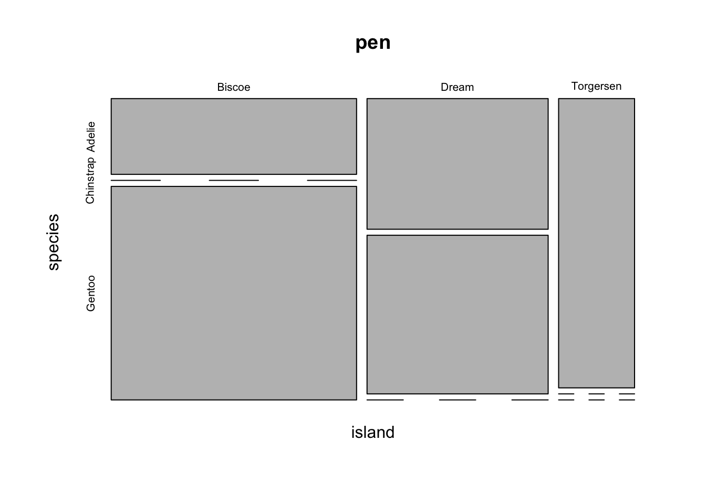
By default ggplot wants to overlay all plots on the same grid. This doesn’t look to good with histograms. Instead you can overlay density plots
a <- ggplot(pen, aes(x=bill_depth_mm, fill=species)) + geom_histogram()
b <- ggplot(pen, aes(x=bill_depth_mm, fill=species)) + geom_density()
grid.arrange(a,b, ncol=2)
The solid fills are still difficult to read, so we can either turn down the alpha (turn up the transparency) or only color the lines and not the fill.
c <- ggplot(pen, aes(x=bill_depth_mm, fill=species)) + geom_density(alpha=.2)
d <- ggplot(pen, aes(x=bill_depth_mm, fill=species)) + geom_density()
grid.arrange(c,d, ncol=2)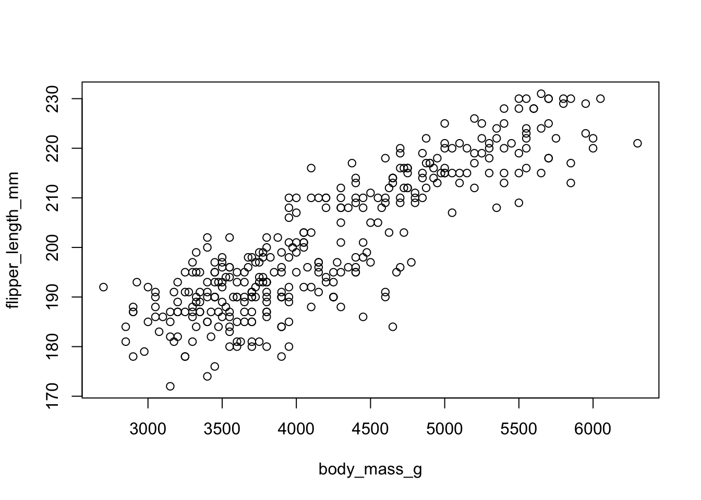
There is no easy way to create grouped histograms in base graphics we will skip it.
Somewhat new (2017), joylines have not been added to the base distribution of ggplot2 yet. For now it’s available in the ggjoy package. Really good way to visualize density plots without the overlapping issue.
library(ggjoy)
ggplot(pen, aes(x=bill_depth_mm, y=species)) + geom_joy()
This is a good place to introduce a term called faceting. The definition is a particular aspect or feature of something, or one side of something many-sided, especially of a cut gem. Basically instead of plotting the grouped graphics on the same plotting area, we let each group have it’s own plot, or facet.
We add a facet_wrap() and specify that we want to panel on the species group. Note the twiddle in front of species
ggplot(pen, aes(x=bill_depth_mm, fill=species)) + geom_density() + facet_wrap(~species)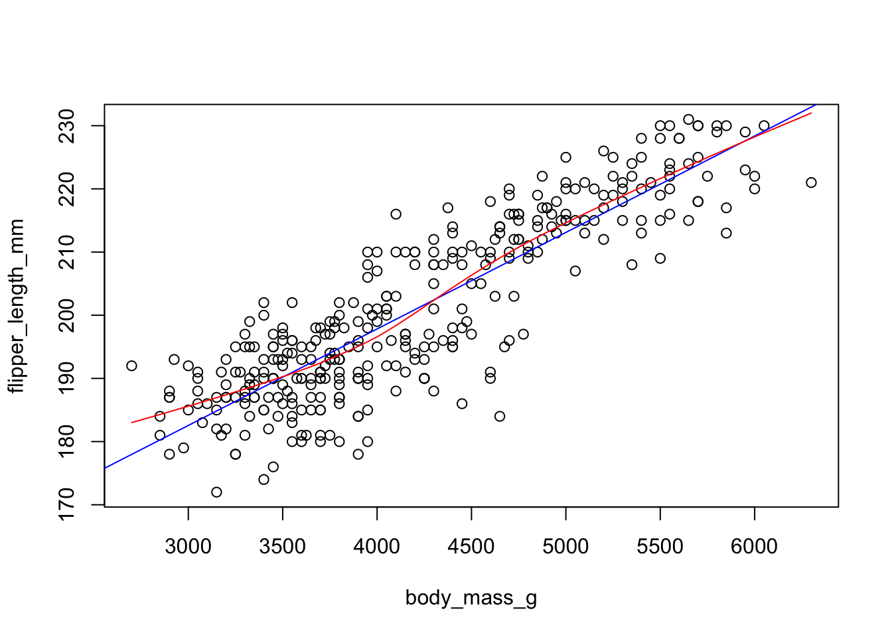
The grid placement can be semi-controlled by using the ncol argument in the facet_wrap() statement.
ggplot(pen, aes(x=bill_depth_mm, fill=species)) + geom_density() + facet_wrap(~species, ncol=4)
It is important to compare distributions across groups on the same scale, and our eyes can compare items vertically better than horizontally. So let’s force ncol=1.
ggplot(pen, aes(x=bill_depth_mm, fill=species)) + geom_density() + facet_wrap(~species, ncol=1)
I use par(mfrow=c(r,c)) for base graphics, where r is the number of rows and c the number of columns.
par(mfrow=c(1,3))
plot(pen$bill_depth_mm)
plot(pen$species)
plot(pen$bill_length_mm ~ pen$bill_depth_mm)
Other resources including learning about layouts. Multipanel plotting with base graphics
Use the grid.arrange function in the gridExtra package. I’ve done it several times above. You assign the output of a ggplot object to an object (here it’s plot1 and plot2). Then you use grid.arrange() to arrange them either side by side or top and bottom.
a <- ggplot(pen, aes(x=bill_depth_mm, fill=species)) + geom_density(alpha=.2)
b <- ggplot(pen, aes(x=bill_depth_mm, fill=species)) + geom_density()
grid.arrange(a,b, ncol=2)This is not much more complicated than taking an appropriate bivariate plot and adding a third variable through paneling, coloring, or changing a shape.
This is trivial to do in ggplot, not trivial in base graphics. So I won’t show those examples.
Continuous variables can also be mapped to the size of the point. Here I set the alpha on the points so we could see the overplotting (many points on a single spot). So the darker the spot the more data points on that spot.
ggplot(pen, aes(x=bill_length_mm, y=bill_depth_mm, size=body_mass_g)) + geom_point(alpha=.2)
A scatterplot matrix allows you to look at the bivariate comparison of multiple pairs of variables simultaneously. First we need to trim down the data set to only include the variables we want to plot, then we use the pairs() function.
c.vars <- pen[,c('flipper_length_mm', 'bill_length_mm', 'bill_depth_mm', 'body_mass_g')]
pairs(c.vars)
Original comment- We can see price has a non-linear relationship with X, Y and Z and x & y have a near perfect linear relationship.
This is very similar to side by side boxplots, one violin plot per sex, within each island > Original comment - This is difficult to really see due to the large number of categories each factor has. The categorical variables in the penguins dataset have less categories w less combinations
ggplot(pen, aes(x=island, y=bill_length_mm, fill=species)) + geom_violin()
Best bet here would be to panel on species and change the x axis to location.
ggplot(pen, aes(x=species, y=bill_length_mm, fill=species)) + geom_violin() + facet_wrap(~island)
a <- ggplot(pen, aes(x=bill_length_mm, y=bill_depth_mm, color=species)) + geom_point() + ggtitle("Colored by species")
d <- ggplot(pen, aes(x=bill_length_mm, y=bill_depth_mm, color=species)) + geom_point() +
geom_smooth(se=FALSE) +ggtitle("Lowess line per species")
grid.arrange(a, d, nrow=1)
Change the shape
ggplot(pen, aes(x=bill_length_mm, y=bill_depth_mm, shape=species)) + geom_point() + ggtitle("Shape by species")
Or we just panel by the third variable
ggplot(pen, aes(x=bill_length_mm, y=bill_depth_mm)) + geom_point() + facet_wrap(~species)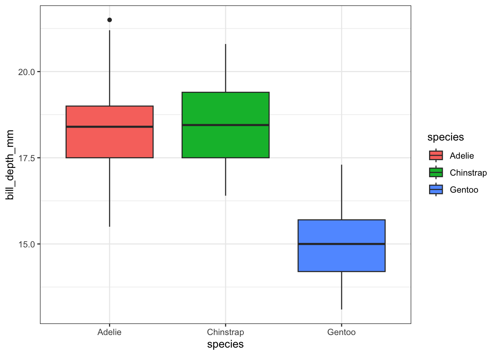
Who says we’re stuck with only faceting on one variable? A variant on facet_wrap is facet_grid. Here we can specify multiple variables to panel on.
ggplot(pen, aes(x=body_mass_g, fill=sex)) + geom_density() + facet_grid(sex~island)
How about plotting bill length against flipper length, for all combinations of species and island, with the points further separated by sex?
ggplot(pen, aes(x=flipper_length_mm, y=bill_length_mm, color=sex)) + geom_point() + facet_grid(island~species)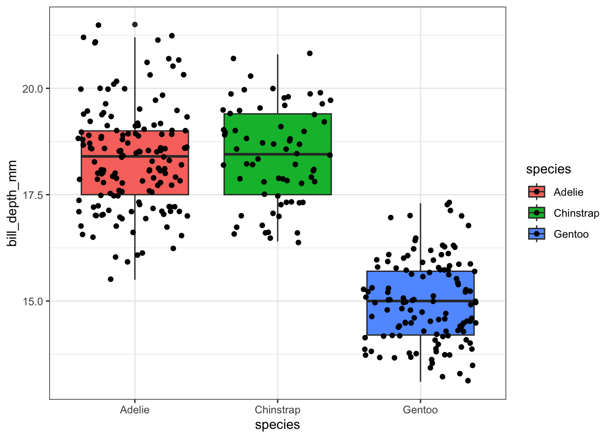
And lastly let’s look back at how we can play with scatterplots of using a third categorical variable (using ggplot2 only). We can color the points by species,
ggplot(pen, aes(x=flipper_length_mm, y=bill_length_mm, color=species)) + geom_point()
We could add a smoothing lowess line for each species separately,
ggplot(pen, aes(x=flipper_length_mm, y=bill_length_mm, color=species)) + geom_point() + geom_smooth(se=FALSE)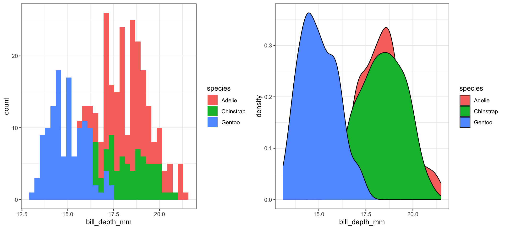
We could change the color by sex, and shape by species.
ggplot(pen, aes(x=flipper_length_mm, y=bill_length_mm, color=sex, shape=species)) + geom_point() 
That’s harder to read. So note that just because you can change an aesthetic, doesn’t mean you should. And just because you can plot things on the same axis, doesn’t mean you have to.
Before you share your plot with any other eyes, always take a step back and try to explain what it is telling you. If you have to take more than a minute to get to the point then it may be too complex and simpler graphics are likely warranted.
Problem: Missing data showing up as a category in ggplot?
Get rid of that far right bar!
ggplot(NCbirths, aes(x=marital)) + geom_bar()
Solution: Use dplyr to select only the variables you are going to plot, then pipe in the na.omit() at the end. It will create a temporary data frame (e.g) plot.data that you then provide to ggplot().
plot.data <- NCbirths %>% select(marital) %>% na.omit()
ggplot(plot.data, aes(x=marital)) + geom_bar()
Problem: Got numerical binary 0/1 data but want to plot it as categorical? > Other related error messages: > * Continuous x aesthetic – did you forget aes(group=…)?
Consider a continuous variable for the number of characters in an email num_char, and a 0/1 binary variable spam.
Solution: Create a second variable var_factor for plotting and keep the binary var as 0/1 for analysis.
email$spam_cat <- factor(email$spam, labels=c("Ham", "Spam"))
ggplot(email, aes(y=num_char, x=spam_cat)) + geom_boxplot()Problem: You want to change the legend title for a fill or color scale.
Solution: Add the name= argument to whatever layer you added that created the legend. Here I speciefied a fill, and it was a discrete variable. So I use the scale_fill_discrete() layer.
ggplot(email, aes(y=num_char, x=spam_cat, fill=spam_cat)) + geom_boxplot() +
scale_fill_discrete(name="Ya like Spam?")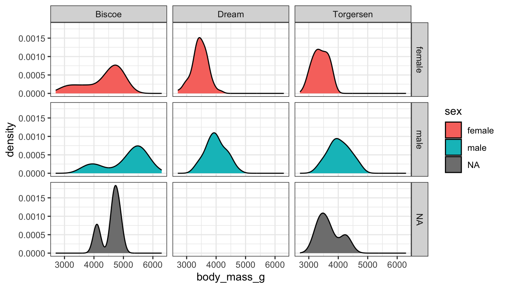
Here, I colored the points by a discrete variable, so the layer is scale_color_discrete().
ggplot(email, aes(x=num_char, y=line_breaks, col=spam_cat)) + geom_point() +
scale_color_discrete(name="Ya like Spam?")Problem: You want to add means to boxplots. Boxplots are great. Even better with violin overlays. Know what makes them even better than butter? Adding a point for the mean. stat_summary is the layer you want to add. Check out this stack overflow post for more context.
ggplot(email, aes(x=spam_cat, y=num_char, fill=spam_cat)) +
geom_boxplot() +
stat_summary(fun.y="mean", geom="point", size=3, pch=17,color="blue")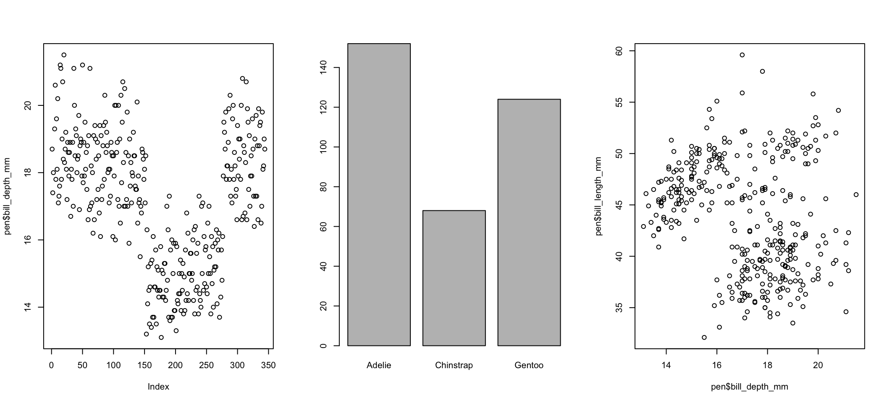
I suggest playing around with size and plotting character pch to get a feel for how these work. You can also look at ?pch (and scroll down in the help file) to see the 25 default plotting characters.
Go here for these.
plotly() and ggplotly(), start with their guide directed towards R users here or browse the Plotly R open source graphing library
- the circle type plots
For any Google Search - be sure to limit searches to within the past year or so. R packages get updated very frequently, and many functions change or become obsolete.